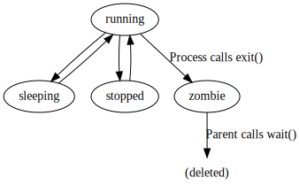

What You'll Learn
- What's a zombie
- How to create one
- How to get rid of it
Creating a zombie
Lets start with a script to create a zombie
#!/usr/bin/env python3
import os
import sys
import time
try:
pid = os.fork()
except Exception as e:
print('Fork failed')
sys.exit(1)
if pid == 0:
# child process
print('Hello from zombie child ' + str(os.getpid()))
sys.exit(0)
# parent process
time.sleep(0.1)
print('Press enter to wait()')
input()
os.waitpid(pid, 0) # The child is a zombie until we execute this line
print('Zombie child reaped')
print('Press enter to exit')
input()
Copy the code to a file zombie1.py and run it in one terminal. This will create a zombie. If pressing ENTER, the zombie will be killed.
$ python3 zombie.py
Hello from zombie child 7414
Press enter to wait()
Inspecting the zombies
Before pressing ENTER (and thus finishing the processes), we can list the zombies in another terminal
$ ps -ely | grep ^Z
S UID PID PPID C PRI NI RSS SZ WCHAN TTY TIME CMD
Z 1000 7416 7415 0 80 0 0 0 - pts/2 00:00:00 python3 <defunct>
A few observations:
- Program is in state
Z, and labeled<defunct> - Program doesn't use any memory (
RSS= 0)
We can also check /proc/<pid>/smaps to validate than the process doesn't have access to any memory
$ cat /proc/7416/smaps
$
The zombie doesn't have any file descriptor (not even stdin, stdout, or stderr)
$ ls -al /proc/7416/fd/
total 0
dr-x------ 2 root root 0 Dec 18 22:42 .
dr-xr-xr-x 9 tatref tatref 0 Dec 18 22:14 ..
How it works
Let's go into the script step by step.
First, we try to fork the current process
try:
pid = os.fork()
except Exception as e:
print('Fork failed')
sys.exit(1)
If the fork() succeeded, we now have 2 processes.
When a process is created (a task in Linux parlance), an entry is inserted in the tasks list. Each entry contains a list of open files, the state of the process, the exit status...
We use the returned pid value to check if we are the parent or the child.
The child just prints it's own pid, and exits
if pid == 0:
# child
print('Hello from zombie child ' + str(os.getpid()))
sys.exit(0)
The parent will block until we press enter. It will then wait for the child process to terminate using waitpid()
print('Press enter to wait()')
input()
os.waitpid(pid, 0)
Here is what the lifecycle looks like:

There is no transition from running to deleted, a process has to become a zombie first.
Also note that there is no dead or deleted state: when the parent calls wait(), the child just ceases to exist if it was in the zombie state.
At that moment, the kernel passes the exit status of the child to the parent, and delete the process from the tasks list.
SIGCHLD
When a child exits, the parent gets notified with SIGCHLD (17)
We can add the following piece of code at the beginning of the script to show it:
import signal
def handler(signum, frame):
print('Got signal', signum)
signal.signal(signal.SIGCHLD, handler)
$ ./zombies.py
Hello from child 8537
**Got signal 17**
Press enter to wait()
When this signal is received, a parent should check it's children with wait to receive their exit codes, and clean the processes from the process list.
Conclusion
- Zombie is an expected state of a Linux program
- Too many zombies could mean the parent process is having an issue
- The zombie process in itself is not an issue
Sources & References
- Processes, forks, signals... - BogoToBogo
- Redhat - Understanding Linux Process States
- https://www.usna.edu/Users/cs/bilzor/ic411/calendar.php?type=class&event=6
- https://man7.org/linux/man-pages/man2/waitid.2.html